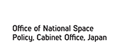

<!doctype html>
<html lang="ja" prefix="og: http://ogp.me/ns# fb: http://www.facebook.com/2008/fbml" class="no-js" >
<head>
  <meta charset="utf-8" />
  <meta name="viewport" content="width=device-width, initial-scale=1.0" />
  <meta name="description" content="Asia Resilience Forum - 自然災害にしなやかなアジア社会を市民の手で！">
  <meta name="author" content="Asia Resilience Forum">
  <meta property="og:title" content="Asia Resilience Forum" />
  <meta property="og:type" content="website" />
  <meta property="og:image" content="http://resilienceforum.asia/assets/img/asiaresilienceforum_logo2.png" />
  <meta property="og:url" content="http://resilienceforum.asia/" />
  <meta property="og:description" content="Asia Resilience Forum - 自然災害にしなやかなアジア社会を市民の手で！" />
  <meta property="og:site_name" content="Asia Resilience Forum" />
  <meta property="fb:app_id" content="239160586251685" />
  <meta property="fb:page_id" content="239599716204294" />
  <link rel="shortcut icon" href="assets/ico/favicon.ico" type="image/x-icon" />
  <link rel="apple-touch-icon" href="assets/ico/apple-touch-icon.png" />
  <link rel="apple-touch-icon" sizes="57x57" href="assets/ico/apple-touch-icon-57x57.png" />
  <link rel="apple-touch-icon" sizes="72x72" href="assets/ico/apple-touch-icon-72x72.png" />
  <link rel="apple-touch-icon" sizes="114x114" href="assets/ico/apple-touch-icon-114x114.png" />
  <link rel="apple-touch-icon" sizes="144x144" href="assets/ico/apple-touch-icon-144x144.png" />
  <link rel="apple-touch-icon" sizes="57x57" href="assets/ico/apple-touch-icon-60x60.png" />
  <link rel="apple-touch-icon" sizes="72x72" href="assets/ico/apple-touch-icon-120x120.png" />
  <link rel="apple-touch-icon" sizes="114x114" href="assets/ico/apple-touch-icon-76x76.png" />
  <link rel="apple-touch-icon" sizes="144x144" href="assets/ico/apple-touch-icon-152x152.png" />
  <title>Race for Resilience</title>
  <link rel="stylesheet" href="assets/css/normalize.css" />
  <link rel="stylesheet" href="assets/css/foundation.css" />
  <link rel="stylesheet" href="assets/css/main.css" />
  <script src="assets/js/modernizr.js"></script>
  <script>
  (function(i,s,o,g,r,a,m){i['GoogleAnalyticsObject']=r;i[r]=i[r]||function(){
  (i[r].q=i[r].q||[]).push(arguments)},i[r].l=1*new Date();a=s.createElement(o),
  m=s.getElementsByTagName(o)[0];a.async=1;a.src=g;m.parentNode.insertBefore(a,m)
  })(window,document,'script','//www.google-analytics.com/analytics.js','ga');
  ga('create', 'UA-46700806-1', 'raceforresilience.org');
  ga('send', 'pageview');
  </script>
</head>
<body>
  <div class="row keyvisual">
    <div class="large-12 medium-12 columns imageoverlay illust">
      
    </div>
          <p class="color-wb">自然災害にしなやかなアジア社会を市民の手でつくるため、第３回国連防災世界会議のパブリックフォーラムとして、
「アジアレジリエンス・フォーラム2015」が開催されました。アジア各国で進む「防災・減災のハッカソンやアプリ開発」
といったICTを活用したレジリエンスプロジェクトの進捗を広く共有したほか、「宇宙×防災」を新たなテーマとして、
超小型衛星ほどよし３号４号の防災的利活用ワークショップ（アイデアソン）などを行ないました。
ご来場、ご協力いただいた皆様、ありがとうございました！</p>

  </div>

  <div class="row">
    <div class="large-12 columns">

    <div class="row">
      <div class="large-7 medium-7 columns">
      
        
        
       
 
      <p>詳細は <a href="http://visions2014.begoodcafe.com/asia-resilience-forum-report/" target="_blank">こちら→</a></p>
      <p>English information is also available <a href="en/index.html">here.</a></p>
       <h3>開催概要</h3>
         <br />
        <dl>
          　<dt class="color-wb">会　場：</dt>
          <dd class="color-wb">東北大学 川内キャンパス 講義棟Ｂ棟201教室、他<br />
          〒980-8576 宮城県仙台市青葉区川内41　※仙台駅よりバスで12 〜15 分<a href="http://www.openstreetmap.org/way/227327118" target="_blank" class="btn btn-small btn-normal">地図</a><br /></dd>
          　<dt class="color-wb">参加費：</dt>
          <dd class="color-wb">無料（防災にも役立つ<a href="http://rootote.jp/news/collaboration/project/bosaigarbageforresilience/">ROOTOTEトートバック付</a>）</dd>
        </dl>


<div class="schedule-left">

<dl>
  <dt>15:20…</dt>
    <dd>受付</dd>
    <dt>15:30…</dt>
    <dd>開演</dd>
    <dt>&nbsp;</dt>    
	<!--dd><span class="color-wb">● </span>キイノートスピーチ</dd>
	<dt>&nbsp;</dt-->
	<!--dd><span class="color-wb">● </span>「途上国×ICT利活用」シンポジウム(仮)</dd>
	<dt>&nbsp;</dt-->
	<!--dd><span class="color-wb">● </span>アジアと日本の防災・減災アプリ開発チームによるアプリ紹介</dd-->

<dd><span class="color-wb">● </span>15:30-15:40 Opening（Jun Shikita）</dd>
<dd><span class="color-wb">● </span>15:40-15:55 Keynote 1 (12min + Q&A)<br>
　　　　　About HOT - Humanitarian OpenStreetMap Team<br />
　　　　　（Yantisa Akhadi）</dd>
　	<dt>&nbsp;</dt>
<dd><span class="color-wb">● </span>15:55-16:15　Keynote 2 (18min + Q&A)<br>
　　　　　FAN - FabLab Asia Network<br />
　　　　　（Yutaka Tokushima）</dd>
	<dt>&nbsp;</dt>

<dd><span class="color-wb">● </span>16:15-16:30 Break (@談話室)</dd>
	<dt>&nbsp;</dt>

<dd><span class="color-wb">● </span>16:30-16:45 World Bank's Special Keynote ／WCDRR <br />
　　　　　(@A棟104教室)</dd>
	<dt>&nbsp;</dt>

<dd><span class="color-wb">● </span>16:50-17:30 アジアンマッパーによる防災アクティビティ(7min x 4 + Q&A)<br>
　　　　　- Taiwan (Kuo-Yu Slayer)<br>
　　　　　- Thailand (Teerayut Horanont)<br>
　　　　　- Indonesia (Vasanshi Hargyono)<br>
　　　　　- Phillipinnes (Maning Samble)</dd>
	<dt>&nbsp;</dt>

<dd><span class="color-wb">● </span>17:30-18:30　レジリエンス・バザール(Resilience Bazaar)<br>
Race/Code for Resilience で生み出された防災・減災アプリ紹介<br />
　　　　　(7min x 7 + Q&A )<br>
　　　　　- Massiah (Pakistan)<br>
　　　　　- Save the Baby (Japan)<br>
　　　　　- Shrepo (Japan)<br>
　　　　　- eBAYANIHAN (Philippines)<br>
　　　　　- 逃げ地図 -Nigechizu- (Japan)<br>
　　　　　- Anytime! (Japan)<br>
　　　　　- FloodAR (Japan)</dd>
	<dt>&nbsp;</dt>

<dd><span class="color-wb">● </span>18:30-18:55　Discussion</dd>
	<dt>&nbsp;</dt>

<dd><span class="color-wb">● </span>18:55-19:00　Closing</dd>
	<dt>&nbsp;</dt>

<dd><span class="color-wb">● </span>19:00-19:30　Meetup time（@談話室）</dd>
	<dt>&nbsp;</dt>

	<dt>19:30…</dt>
    <dd>終了予定</dd>
</dl>
</div>

<div class="schedule-left">
 
<dl>
  <dt>13:20…</dt>
    <dd>受付</dd>
    <dt>13:30…</dt>
    <dd>開演</dd>
    <dt>&nbsp;</dt>    

<dd><span class="color-wb">●</span>13:30-13:40 Welcome Speech（Shikita, Furuhashi）</dd>
	<dt>&nbsp;</dt>
<dd><span class="color-wb">●</span>13:40-14:00 Topic Speech （Dr.Dodo  BMKG/Indoneshia）</dd>
	<dt>&nbsp;</dt>
<dd><span class="color-wb">●</span>14:00-14:20 Micro Satellite for Disaster Prevention（Shibayama）</dd>
	<dt>&nbsp;</dt>
<dd><span class="color-wb">●</span>14:20-14:40 Abstract of Hodoyoshi（Matsui）</dd>
	<dt>&nbsp;</dt>
<dd><span class="color-wb">●</span>14:40-15:00 Activity for Disaster Prevention/Mitigation in the world.（Kurokawa）</dd>
	<dt>&nbsp;</dt>
<dd><span class="color-wb">●</span>15:00-15:20 About Satellite Hodoyoshi（Nakasuka）</dd>
	<dt>&nbsp;</dt>

<dd><span class="color-wb">●</span>15:20-15:40 Break（@談話室/Communication Room）</dd>
	<dt>&nbsp;</dt>

<dd><span class="color-wb">●</span>15:40-15:50 About Ideathon （Taichi FURUHASHI）</dd>
	<dt>&nbsp;</dt>
<dd><span class="color-wb">●</span>15:50-16:00 Teaming（Max: 5 members/team）</dd>
	<dt>&nbsp;</dt>
<dd><span class="color-wb">●</span>16:00-17:30 Brain Storming</dd>
	<dt>&nbsp;</dt>

<dd><span class="color-wb">●</span>17:30-18:00 Presentation (2min × max 10 teams)</dd>
	<dt>&nbsp;</dt>
<dd><span class="color-wb">●</span>18:00-18:15 Awards ceremony</dd>
	<dt>&nbsp;</dt>

<dd><span class="color-wb">●</span>18:15-18:20 Summarized</dd>
	<dt>&nbsp;</dt>
<dd><span class="color-wb">●</span>18:20-18:30 Closing（Keiko Saito）</dd>
	<dt>&nbsp;</dt>

<dd><span class="color-wb">●</span>18:30-19:00 Meetup Time（@談話室/Communication Room）</dd>
	<dt>&nbsp;</dt>

	<dt>19:30…</dt>
    <dd>終了予定</dd>
</dl>
</div>

<div class="schedule-left">
<p class="color-gr">[同時開催]<br />
アジアレジリエンス・フォーラム in 名取</p>
<p>10:00 〜12:00予定 <span class="color-wb">参加無料・当日来場可</span><br />
＠イオンモール名取「イオンホール」<br />
<span class="color-gr">● </span>被災地におけるAR技術の活用の発表、他</p>
</p>
<p class="color-wb">
主催：世界銀行（GFDRR、東京防災ハブ）、NPO 法人BeGood Cafe、<br />
　　　Code for Resilience 、Race for Resilience 実行委員会<br />
共催：内閣府宇宙戦略室</p>
 </div><!--schedule-left-->
      <!--
      <ul class="logolist">
        <li></li>
        <li></li>
        <li></li>
        <li></li>
        <li></li>
        <li></li>
      </ul>
      -->
   
          <dl>
          　<dt class="color-wb">会　場：</dt>
          <dd class="color-wb">機械振興会館 B3F 研修室<br />〒105-0011 東京都港区芝公園3-5-8<br />
          <a href="http://www.openstreetmap.org/way/150858358" target="_blank" class="btn btn-small btn-normal">地図</a><br /></dd>
          　<dt class="color-wb">参加費：</dt>
          <dd class="color-wb">無料　※懇親会は別途有料予定</dd>
        </dl>

<div class="schedule-left">
   
  <dl>
  <dt>12:30…</dt>
    <dd>受付予定</dd>
    <dt>13:00…</dt>
    <dd>開演</dd>
    <dt>&nbsp;</dt>    

<dd><span class="color-wb">●</span>13:00-13:10 Welcome Speech（Mihara）</dd>
	<dt>&nbsp;</dt>

<dd><span class="color-wb">●</span>13:10-13:20 Introduction（Taichi FURUHASHI） </dd>
	<dt>&nbsp;</dt>

<dd><span class="color-wb">●</span>13:20-14:00 Micro Satellite<br>
&nbsp;①Micro Satellite Hodoyoshi for Disaster Prevention<br>　　　　　（Shibayama）<br>
　　　　　②Abstract of Hodoyoshi（Matsui）<br>
　　　　　③Activity for Disaster Prevention/Mitigation in the world.<br>　　　　　（Kurokawa）</dd>
	<dt>&nbsp;</dt>

<dd><span class="color-wb">●</span>14:00-14:30 宇宙を活用した防災システム（国際航業）</dd>
	<dt>&nbsp;</dt>

<dd><span class="color-wb">●</span>14:30-14:45 Break</dd>
	<dt>&nbsp;</dt>

<dd><span class="color-wb">●</span>14:45-15:00 About Ideathon（Taichi FURUHASHI）</dd>
	<dt>&nbsp;</dt>

<dd><span class="color-wb">●</span>15:00-15:15 Brain Storming</dd>
	<dt>&nbsp;</dt>
<dd><span class="color-wb">●</span>15:15-15:35 Speed Storming<br />(5minｘ3set＝15min + option 5min)（二人ペアでそれぞれ<br />　　　　　２分間説明＋１分まとめ。計５分が１セット）</dd>
	<dt>&nbsp;</dt>
<dd><span class="color-wb">●</span>15:35-15:45 Brain Storming</dd>
	<dt>&nbsp;</dt>
<dd><span class="color-wb">●</span>15:45-16:00 Voting with star marks（mx: 5 stars）</dd>
	<dt>&nbsp;</dt>
<dd><span class="color-wb">●</span>16:00-16:20 上位Teamの紹介</dd>
	<dt>&nbsp;</dt>
<dd><span class="color-wb">●</span>16:20-16:30 Teaming（max: 10 Teams）</dd>
	<dt>&nbsp;</dt>

<dd><span class="color-wb">●</span>16:30-17:50 Group work/Making Presentation</dd>
	<dt>&nbsp;</dt>

<dd><span class="color-wb">●</span>17:30 Open</dd>
	<dt>&nbsp;</dt>

<dd><span class="color-wb">●</span>17:50-18:00 Break</dd>
	<dt>&nbsp;</dt>

<dd><span class="color-wb">●</span>18:00-18:10 Opening Speech（Fukuyo, Shikita）</dd>
	<dt>&nbsp;</dt>
<dd><span class="color-wb">●</span>18:10-18:30 Introduction about WCDRR in Sendai（Taichi FURUHASHI）</dd>
	<dt>&nbsp;</dt>

<dd><span class="color-wb">●</span>18:30-19:00 Presentation（2min x 10 teams）</dd>
	<dt>&nbsp;</dt>

<dd><span class="color-wb">●</span>19:00-19:15 Awards ceremony</dd>
	<dt>&nbsp;</dt>

<dd><span class="color-wb">●</span>19:15-19:20 Summarized</dd>
	<dt>&nbsp;</dt>
<dd><span class="color-wb">●</span>19:20-19:25 Closing（Taichi FURUHASHI）</dd>
	<dt>&nbsp;</dt>

	<!--dd><span class="color-wb">●</span> 超小型衛星などの宇宙技術解説</dd>
	<dt>&nbsp;</dt-->
	<!--dd><span class="color-wb">●</span> 宇宙技術を途上国や日本の市民による防災に利活用するためのアイデアソン</dd>
	<dt>18:00…</dt-->
	<!--dd>（17:40 〜受付開始）<br /><span class="color-wb">●</span> 成果報告会</dd>
	<dt>19:30…</dt-->


    <dd>懇親会</dd>
    <dd><span class="color-wb">●</span>19:30-20:30 懇親会/Meetup Event</dd>
	<dt>&nbsp;</dt>

    
</dl>
</div>

<div class="schedule-left">
<p class="color-wb">主催：内閣府宇宙戦略室、NPO 法人BeGood Cafe、<br />
　　　Code for Resilience 、Race for Resilience 実行委員会<br />
協力：世界銀行（GFDRR、東京防災ハブ）、ISAC 事務局</p>
  </div>
      </div><!--large-7 medium-7 columns-->

      <div class="large-4 large-offset-1 medium-4 medium-offset-1 columns">
<a href="assets/img/arf-ver5.pdf"  target="_blank"> </a><br />
<a href="assets/img/rootoot_rev05.jpg" target="_blank"></a><br />

<h4>スケジュール</h4>

        <div class="schedule">
          <div id="icon_ideathon"></div>
          <dl class="day_list">
            <dt>●3月14日(土) 午後</dt>
            <dd>Day1: 成果発表会<br />
            @国連防災世界会議/東北大学川内キャンパス</dd>
          </dl>
        </div>

        <div class="schedule">
          <div id="icon_hackathon"></div>
          <dl class="day_list">
            <dt>●3月15日(日) 午前</dt>
            <dd>Day2: 地域連携<br />
            @閖上さいかい市場&イオンモール</dd>

            <dt>●3月15日(日) 午後</dt>
            <dd>Day2: ワークショップ&アイディアソン<br />
            @国連防災世界会議/東北大学川内キャンパス</dd>
          </dl>
        </div>

        <div class="schedule">
          <div id="icon_global"></div>
          <dl class="day_list">
            <dt>●3月16日(月) 午後</dt>
            <dd>Day3: ワークショップ&アイディアソン<br />
            @機械振興会館(東京/神谷町)</dd>

            <dt>●3月16日(月) 夕方</dt>
            <dd>Day3: 成果発表会<br />
              @機械振興会館(東京/神谷町)</dd>
          </dl>
        </div>
<!--
        <ul class="logolist snslist">
          <li><a href="https://plus.google.com/u/2/b/116849176064397698522/" target="_blank"></a></li>
          <li><a href="https://www.facebook.com/race4resilience" target="_blank"></a></li>
          <li><a href="https://twitter.com/race4resilience" target="_blank"></a></li>
          <li class="last"><a href="http://www.youtube.com/user/race4resilience" target="_blank"></a></li>
        </ul>
-->
  </div><!--large-4 large-offset-1 medium-4 medium-offset-1 columns-->

    </div>
    </div>

    <hr />
    <div class="cooperation">
    <p class="coope-text">助　　成：国際交流基金アジアセンター　アジア・市民交流助成<br />
特別協力：東京大学 空間情報科学研究センター、青山学院大学 地球社会共生学部、東北大学、宮城県名取市、<br />
一般社団法人名取市観光物産協会、超小型衛星ほどよしチーム、ASTROSCALE、ROOTOTE<br />
協　　力：マップコンシェルジュ株式会社、復興庁新しい東北先導モデル事業 みやぎベジフル食彩事業創造委員会<br />
お問合せ先：NPO 法人ビーグッドカフェ（担当：坂本、原田）　TEL：03-6413-8801　asia@begoodcafe.com</p>

	</div><!--cooperation-->


<div class="coop-logo">
    <a href="http://www.worldbank.org/ja/country/japan" target="_blank"></a><a href="https://www.gfdrr.org" target="_blank"></a><a href="http://www.worldbank.org" target="_blank"></a><a href="http://begoodcafe.com" target="_blank"></a><a href="http://www.codeforresilience.org" target="_blank"></a><a href="http://raceforresilience.org" target="_blank"></a><a href="http://www.mapconcierge.com" target="_blank"></a><a href="http://jfac.jp" target="_blank"></a>
</div>

    </div>
</div>


  <div class="row">
    <div class="large-12 medium-12 footer">
      <p>(c)レース・フォー・レジリエンス実行委員会／Race for Resilience Action committee, <a href="http://creativecommons.org/licenses/by/2.1/jp/">CC BY - Under Creative Commons License: Attribution</a></p>
    </div>
  </div>

  <script src="assets/js/jquery.js"></script>
  <script src="assets/js/main.js"></script>
  <script src="assets/js/foundation.min.js"></script>
  <script>
    $(document).foundation();
  </script>
  </body>
</html>
